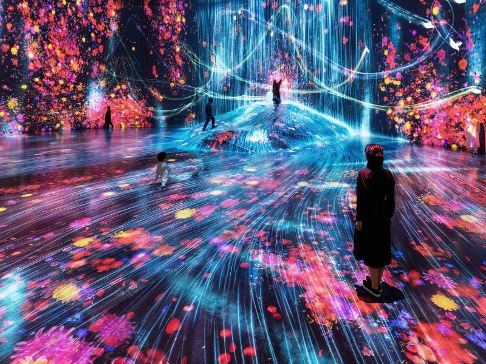

1. Giới thiệu chung
teamLab Borderless là một bảo tàng nghệ thuật kỹ thuật số nổi tiếng tại Tokyo, Nhật Bản. Đây là nơi trưng bày các tác phẩm nghệ thuật được tạo ra bằng công nghệ hiện đại kết hợp giữa ánh sáng, âm thanh và chuyển động. Không giống các bảo tàng truyền thống, teamLab Borderless không có ranh giới cố định giữa các phòng trưng bày, tạo nên một không gian “không biên giới”.
Các tác phẩm tại đây được thiết kế để tương tác với người xem. Khi bạn bước đi, chạm tay hoặc di chuyển, hình ảnh và ánh sáng sẽ thay đổi theo. Điều này tạo nên trải nghiệm cá nhân hóa và độc đáo cho mỗi du khách.
2. Lịch sử hình thành
teamLab Borderless được sáng lập bởi nhóm nghệ sĩ kỹ thuật số teamLab. Nhóm này được thành lập từ năm 2001 và nhanh chóng nổi tiếng toàn cầu nhờ việc kết hợp nghệ thuật với công nghệ số. Bảo tàng chính thức mở cửa tại Tokyo và trở thành một trong những địa điểm được check-in nhiều nhất tại Nhật Bản.
3. Những khu vực nổi bật
• Forest of Resonating Lamps
Đây là khu vực gồm hàng trăm chiếc đèn lồng treo lơ lửng trong không gian tối. Khi có người bước vào, ánh sáng sẽ thay đổi màu sắc liên tục, tạo nên khung cảnh huyền ảo và đầy mê hoặc.
• Crystal World
Khu vực này sử dụng hàng nghìn dây đèn LED tạo thành không gian ba chiều. Du khách có thể sử dụng ứng dụng điện thoại để thay đổi hiệu ứng ánh sáng, mang lại trải nghiệm tương tác thú vị.
• Flowers and People
Đây là không gian trình chiếu các loài hoa nở và tàn theo thời gian thực. Hình ảnh hoa sẽ thay đổi theo mùa và theo chuyển động của người tham quan.
4. Hoạt động trải nghiệm
- Chụp ảnh nghệ thuật với hiệu ứng ánh sáng độc đáo.
- Khám phá không gian nghệ thuật tương tác.
- Tham gia các phòng trưng bày đổi màu theo chuyển động.
- Thưởng thức âm thanh và ánh sáng kết hợp sống động.
- Tìm hiểu về nghệ thuật kỹ thuật số hiện đại.
5. Giá trị văn hóa và nghệ thuật
teamLab Borderless không chỉ là một điểm tham quan mà còn là biểu tượng cho sự phát triển của nghệ thuật kỹ thuật số trong thời đại 4.0. Nơi đây thể hiện sự sáng tạo không giới hạn của con người khi công nghệ được sử dụng như một công cụ nghệ thuật.
Bảo tàng đã góp phần đưa nghệ thuật số đến gần hơn với công chúng, giúp mọi người có cái nhìn mới mẻ về cách nghệ thuật có thể thay đổi và phát triển theo thời gian.
6. Lý do nên tham quan
Nếu bạn yêu thích công nghệ, nghệ thuật hiện đại và những trải nghiệm mới lạ, teamLab Borderless chắc chắn là địa điểm lý tưởng. Đây là nơi bạn có thể khám phá, chụp ảnh, thư giãn và mở rộng tầm nhìn về thế giới nghệ thuật số.
Không gian rộng lớn và đầy màu sắc giúp du khách cảm thấy như bước vào một thế giới tương lai đầy sáng tạo và trí tưởng tượng.
Xem chi tiết